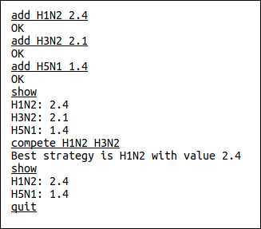

Note: This homework uses several programs that are available on the class system (login information provided in class). All of the code is in directory /home/softsec/assign2, which you can copy to your current directory using “cp -r /home/softsec/assign2 .” (don’t forget the final period!). Inside this directory are subdirectories for individual questions, named by the question number. For example, subdirectory q3 contains the code needed for question 3. All file names and paths in the questions below are relative to that question’s directory.
The two most prominent weaknesses we have studied so far are out-of-bounds access vulnerabilities (both write and read) and use-after-free vulnerabilities. Both types of vulnerabilities are particularly dangerous in C and C++, but what about in Java? Answer the following two questions about these weaknesses as they relate to Java programs.
Is it possible for a running Java program to attempt an out-of-bounds memory access? If it’s possible, explain what the behavior of the program would be in such a situation. If it’s not possible, explain how the Java language makes this impossible.
Is it possible for a running Java program to attempt to use an object after it is freed? If it’s possible, explain what the behavior of the program would be in such a situation. If it’s not possible, explain how the Java language makes this impossible.
The code in the q2 directory is designed to manage a set of competing “strategies”, each of which has value, and allows them to compete (removing the weaker, or lower-valued, strategy). A sample run of the program is shown below, where user input is underlined and the other lines are responses from the system. The program accepts four commands – “add”, “compete”, “show”, and “quit” – all of which are shown in the example below. The example shows 3 strategies being added, 2 competing, and finally a list of the results.

Your first steps should be to use “make” to compile the code to an executable, test it out to make sure you can run it, and then examine the code to see how it works. You don’t need to understand every little detail, but you should be able to get the “big picture.”
There are two vulnerabilities in this code: an out-of-bounds write in the alist.c code, and a use-after-free in the strategy.c code. Your task is to find both vulnerabilities, and figure out sequences of commands that trigger them. You can (and should!) change the Makefile so that address sanitizer is turned on when making the executable, and then for each vulnerability report the following:
A sequence of commands that can be entered to trigger the vulnerability (a “proof-of-concept” or PoC input).
The output (cut-and-paste or screenshot) given by the ASAN-instrumented program when the vulnerability is triggered by the PoC input.
A description of what happens when the PoC input is used in a run of a non-ASAN-instrumented executable.
A succinct explanation of what the vulnerability is, and why the PoC triggers it.
Go into the q3 directory and examine the code in overflow.c, and then compile it by typing “make” in that directory to produce an executable named ./overflow that you can run. This code attempts to test if an unsigned size calculation overflows the unsigned num_bytes variable, but it does it incorrectly (as we discussed in class), resulting in an integer overflow vulnerability (CWE-190). Note that on this system, an unsigned integer is 32 bits.
Find the smallest user input value that “fools” the test – it overflows the num_bytes variable, but the test does not detect that. You should figure out this value mathematically, and write that up in your homework submission (showing your work and explaining your reasoning). You can test whether you have the right value by running the program – if you calculated some value \(n\), then entering \(n\) should pass the test, but entering \(n-1\) should result in the overflow being detected.
Rust is an interesting system programming language, which provides some protections that are not available in C and C++. In this question, you’ll explore the Rust code in q4 to learn about some features of the Rust compiler. You don’t need to understand the Rust language to answer this question – the provided code is simply a Rust version of the C code that was used in the previous question.
To build the development/debug version of this program go into the q4 directory and type “cargo build”. This will create an executable that you can run as target/debug/q4. Run the program three times: once with a small value for the input array size (a value that will definitely not overflow), once with the \(n\) value you determined in the previous question, and once with \(n-1\). Report what happens.
To make a release/production version of this program, run “cargo build --release” and then run the resulting executable that is in target/release/q4 three times with the same values you used in part (a). Report what happens.
Where did you notice any different behavior between the “debug” and “release” executables? What is the advantage of having different behavior like this?
In the q5 directory, the countos.c program uses a common pattern for reading from a binary file metadata directory, to count the number of ‘O’ characters in data fields. To see how it works, first compile to an executable named “countos” and run it with the sample data file using
./countos <good.datThis program has an attempt at making sure data fields do not go past the end of the file, but it doesn’t work right. Use AFL fuzz to find a crashing input, while documenting your work and findings as an answer to this question.